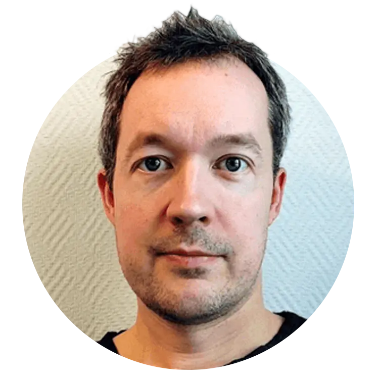

Diana Ekman
Bioinformatician, NBIS, Stockholm University
Room C6:323a (Linnérummet)
Entrance C11
Biomedicinskt centrum
Uppsala University / ScilifeLab
Husargatan 3
75237 Uppsala
Sweden
Few selected hotels are listed below ranked by distance from the venue.
The venue and hotels are also marked on the map.
Use the UL website or the UL app for bus and train services around Uppsala. For buses from the Centralstation (Train/Bus), take Bus 4 (towards Gottsunda Centrum) or 8 (towards Sunnersta) and get off at the stop Uppsala Science Park. Bus tickets can be purchased in the app or directly from the driver using a credit card.
Bioinformatician, NBIS, Stockholm University
Bioinformatician, NBIS, Uppsala University

Deputy CTO, NBIS, Uppsala University
This event is organized by NBIS in co-operation with National Genomics Infrastructure (NGI). NBIS and NGI are platforms at the Science for Life Laboratory (SciLifeLab). NBIS is the Swedish node of Elixir.
For queries, write to us at edu.intro-ngs[at]nbis.se.
Introduction to Bioinformatics using NGS data, a workshop created by NBIS is licensed under CC BY-NC-SA 4.0


{kind=link}